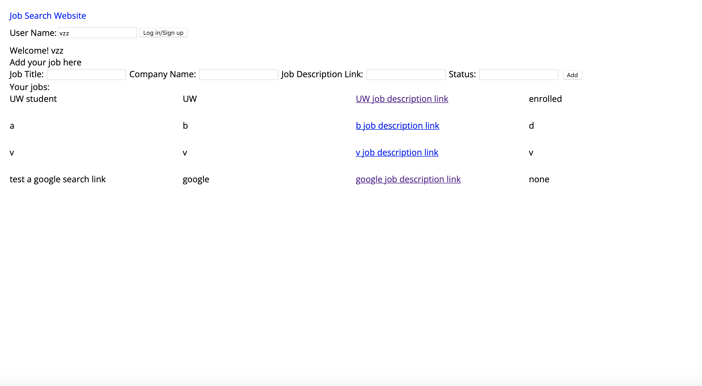

FP0 Prototype Write Up
Site Link
Overview:
This website provides a pretty simple view of what jobs users have saved, as well as adding new jobs and deleting jobs.
Development Process:
Based on the prototype, I polished a little bit for the website UI, especially for the job list. Also, I added delete job functionality by binding events on dynamic elements "delete", which is generated through lint-html.

Issues:
The main issue is on the UI, where I would like to add some color for each data entry. Therefore, I did a little research on how to make interphase colors between rows. I got the result that an easy css can accomplish that task. I also include that in my cheatsheet.
Ideas and Future:
- More functionalities, especially edit current job lists.
- Can be more interactive with the job description link. E.g., automatically get information based on the job description link.
- A more secure login/sign up way should be utilized.
Kudos:
- Kudos to all of the css documentation online (and chatgpt for giving me advice on css grid).
- An article talking about binding events on dynamic elements.